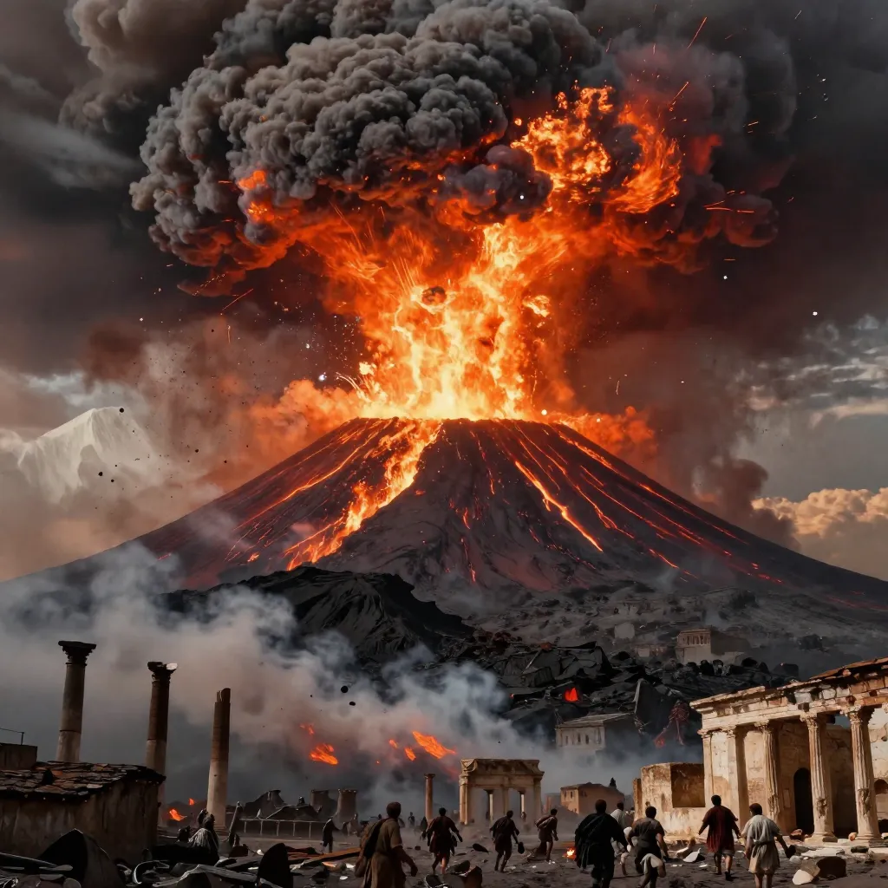
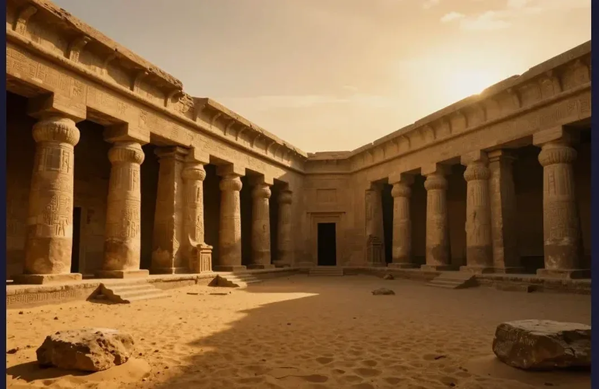
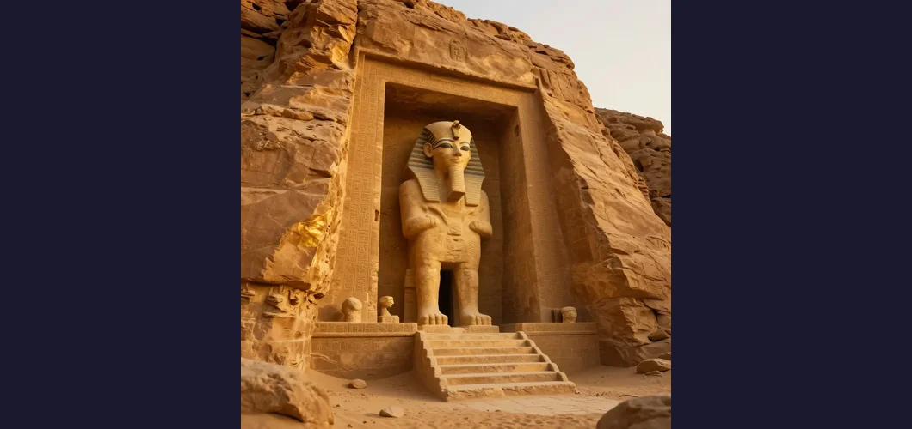
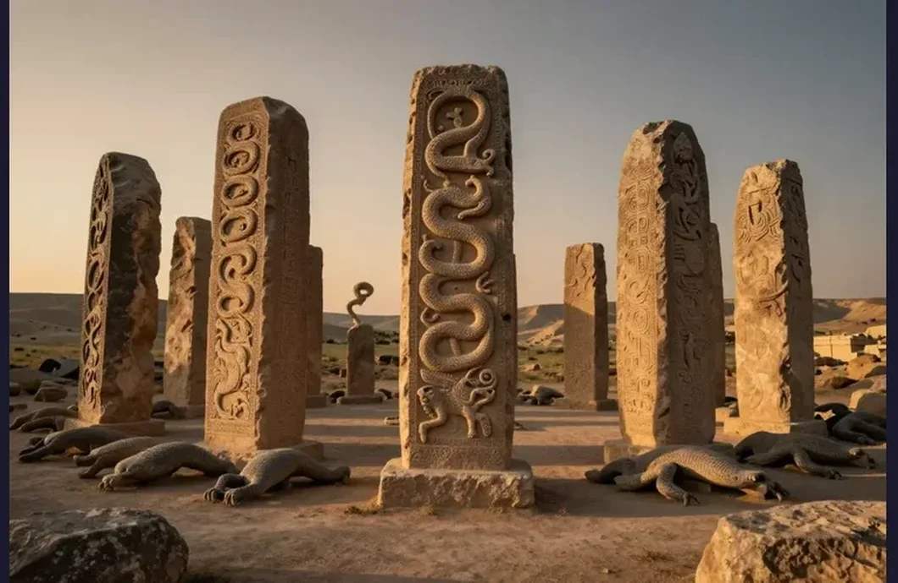
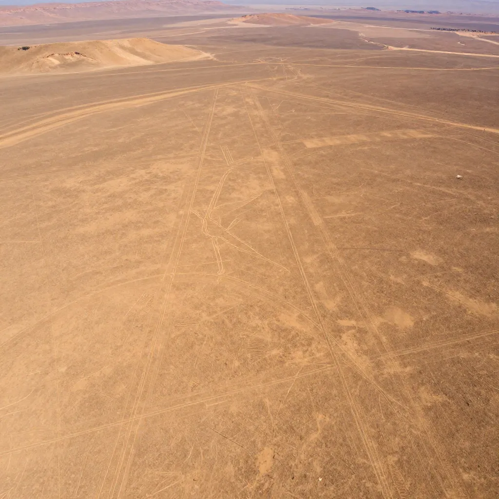
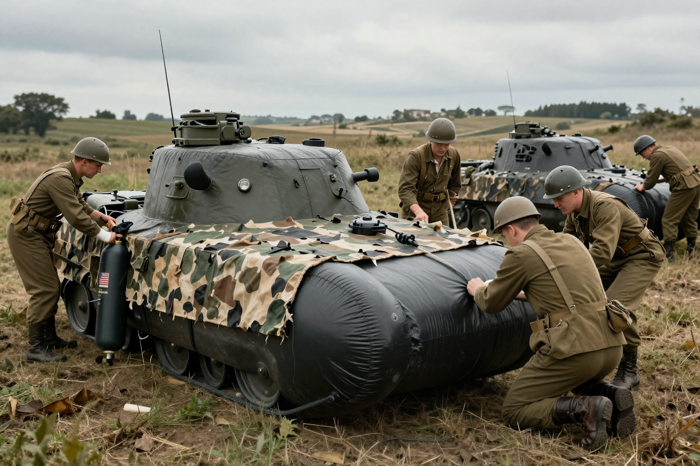
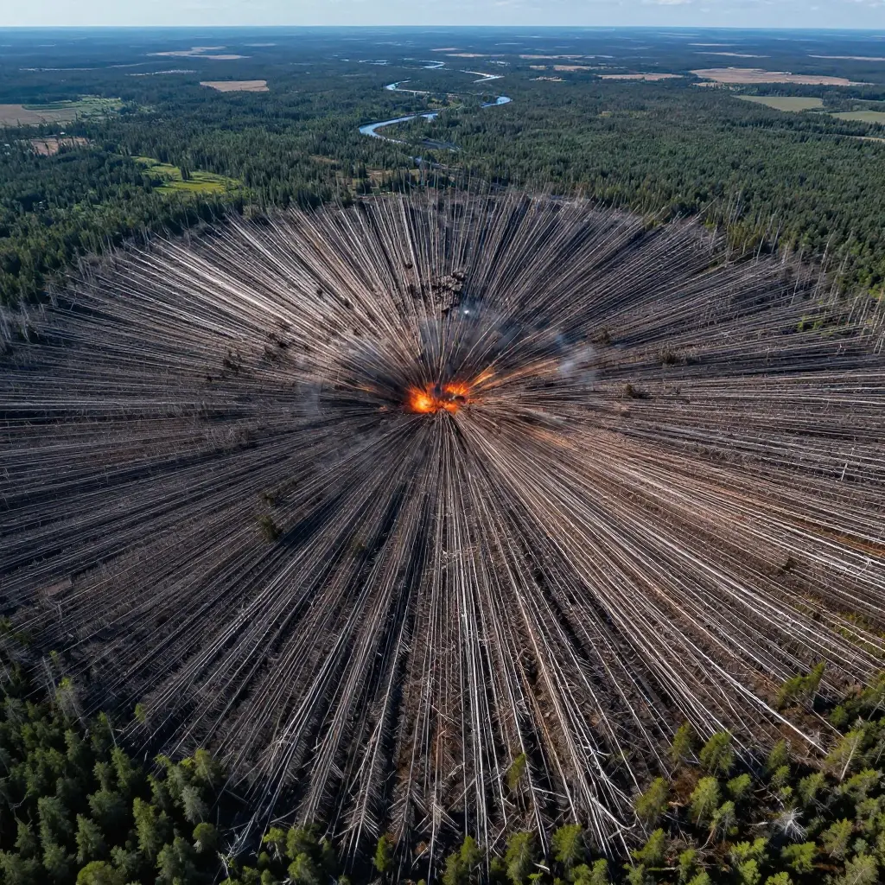

Explore History's Greatest Unsolved Mysteries
Evidence-based stories about ancient enigmas, unexplained phenomena, and the strangest events in history. Every article includes verified sources and further reading.
Dead Sea Scrolls: The 2,000-Year-Old Texts That Rewrote Biblical History
Discovered by accident in 1947, the Dead Sea Scrolls are the oldest known biblical manuscripts, predating any previous copy by 1,000 years.
El Dorado: The Legendary City of Gold That Drove Conquistadors Mad
El Dorado was not a city but a person — a Muisca king covered in gold dust. Discover how this Colombian ceremony became the greatest treasure legend in history.

Pompeii: The City Frozen in Ash for 1,700 Years That Changed How We See Ancient Rome
On August 24, 79 AD, Mount Vesuvius erupted and buried the Roman city of Pompeii under tons of volcanic ash, preserving a moment in time for 1,700 years.
Machu Picchu: The Lost Citadel of the Incas That Was Never Really Lost
A 500-year-old Inca citadel perched at 8,000 feet. Built without mortar, abandoned without invasion, and never truly lost.
The Great Sphinx of Giza: Who Really Built It and What's Hidden Beneath?
The Great Sphinx has guarded Giza for 4,500 years. Erosion theories and hidden chambers keep the debate alive.
The Lost City of Atlantis: Myth, Memory, or the Greatest Cover-Up in History?
Plato described Atlantis 2,400 years ago as a great civilization that sank beneath the waves. New evidence keeps the debate alive.
Easter Island's Moai Statues: Who Built Them and Why Did They Stop?
The 887 moai statues have fascinated researchers for centuries. Recent discoveries may rewrite what we know about Rapa Nui civilization.
How Were the Pyramids Built? The Great Pyramid Mystery That Endures
The Great Pyramid contains 2.3 million stone blocks aligned with surgical precision. After 4,500 years, its construction methods remain fiercely debated.

Stonehenge: The Ancient Monument That Still Defies Explanation
A 5,000-year-old circle of massive stones transported 150+ miles. How and why remains debated.

Cleopatra's Lost Tomb: Where Is Egypt's Last Queen Buried?
The tomb of Cleopatra VII has never been found — a 2025 discovery reignited the search
The Oak Island Money Pit: 200 Years of Treasure Hunting
A mysterious pit on a Nova Scotia island has captivated treasure hunters for over two centuries
Derinkuyu Underground City: 20,000 People Lived Beneath Turkey!
A massive underground city in Turkey that housed 20,000 people across 18 levels. Who built it and why?
Sacsayhuamán: The Inca Fortress Built With Impossible Stones
Massive stone blocks weighing up to 200 tons fit together so perfectly that not even a sheet of paper fits between them.
The Copper Scroll Treasure
A 2,000-year-old treasure map listing billions in hidden gold and silver
The Saqqara Bird: Did Ancient Egyptians Understand Flight?
A 2,200-year-old wooden bird with modern aircraft aerodynamics
The Mysterious Monoliths: Metal Pillars from Nowhere
Strange metal monoliths appeared in remote locations worldwide in 2020. Were they art, pranks, or something else entirely?
Pentagon UAP Reports 2024: What Does the Government Know?
The latest developments in the US government's investigation of unidentified anomalous phenomena.

The New England Vampire Panic of 1892
When tuberculosis ravaged New England families, desperate communities turned to an unlikely culprit: vampires.
Wilmer McLean: The Man Who Couldn't Escape the Civil War
The incredible true story of the man whose property witnessed both the first battle and final surrender of the American Civil War.

The Roman Dodecahedron: Ancient Mystery That Still Baffles Experts
Over 130 mysterious 12-sided bronze objects have been found across the Roman Empire, but no one knows what they were used for.

Thutmose II Tomb: The Lost Pharaoh Found!
Egypt announces the discovery of Thutmose II's tomb - the first royal tomb found since Tutankhamun in 1922!
The Lost City of Heracleion
A magnificent ancient Egyptian city that sank into the Mediterranean Sea and stayed hidden for over 1,200 years. Divers discovered temples,

Gobekli Tepe: The World's First Temple!
A temple built 12,000 years ago - before humans even invented farming! This discovery changed everything we thought we knew about ancient ci
The Crystal Skulls
Mysterious quartz skulls - ancient artifacts or modern fakes?
The Terracotta Army
8,000 clay soldiers guarding an emperor's tomb for 2,000 years
The Baghdad Battery
Were ancient people making electricity 2,000 years ago?

The Antikythera Mechanism: An Ancient Computer!
Divers found a 2,000-year-old machine at the bottom of the ocean. It had gears like a clock - but ancient Greeks weren't supposed to have th
The Voynich Manuscript: The Book No One Can Read!
A 600-year-old book full of weird plants, secret codes, and naked people in green pools. The smartest people in the world have tried to read
The Indus Valley Civilization
One of the world's oldest urban civilizations that mysteriously declined

The Nazca Lines: Giant Drawings in the Desert!
Mysterious giant drawings etched into the Peruvian desert over 2,000 years ago. They can only be seen from the sky - but why did ancient peo
Jack the Ripper: The Victorian Killer Whose Identity Remains a Mystery
In 71 days during 1888, five women were murdered in London's Whitechapel. Over 200 suspects later, the case remains history's greatest unsolved crime.
The Mary Celeste: History's Greatest Ghost Ship Mystery
A ship found adrift in 1872 with crew vanished but cargo intact. No signs of violence. Why did everyone leave?

Amelia Earhart: 88 Years Later, Are We Close to Finding Her Plane?
New satellite imagery and competing 2025 expeditions may finally solve aviation's greatest mystery
D.B. Cooper: The Only Unsolved Skyjacking in American History
In 1971, a man hijacked a flight, collected $200,000, and parachuted away — never seen again

The Ghost Army: How Fake Tanks and Sound Effects Helped Win WWII
A secret U.S. Army unit used inflatable tanks, recorded sounds, and phony radio messages to fool Nazi forces.
The Philadelphia Experiment: Did the Navy Make a Ship Invisible?
In 1943, the U.S. Navy allegedly made the USS Eldridge disappear using electromagnetic fields. Was it real?
The London Beer Flood of 1814
300,000 gallons of beer flooded London streets in a deadly wave
The Lost Colony of Roanoke: America's Oldest Mystery
117 colonists vanished leaving only the word CROATOAN carved in a tree
The Cadaver Synod
The medieval trial where a dead pope was dug up and put on trial
The Lost Fabergé Eggs: A Royal Treasure Hunt!
Imagine eggs made of gold and diamonds, each hiding a tiny secret inside. 8 of these magical treasures are still missing - could you be the
The Great Emu War
When Australia lost a war against 20,000 emus
The Dancing Plague of 1518
A mysterious epidemic where people danced uncontrollably for weeks
The Great Molasses Flood
A bizarre 1919 Boston disaster where 2.3 million gallons of molasses flooded the streets
Bigfoot: The Elusive Creature That Keeps Eyewitnesses Coming Forward
From the Patterson-Gimlin film to thousands of footprint casts, Bigfoot remains the world's most famous cryptid. What does the evidence actually show?
The Phoenix Lights: Arizona's Massive 1997 UFO Sighting
Thousands saw a V-shaped formation of lights over Arizona. The governor held a press conference. Still unexplained.
The Dyatlov Pass Incident: Nine Hikers Died Under Impossible Circumstances
Nine experienced Soviet hikers died in 1959 under bizarre conditions that still defy explanation
The Marfa Lights: Texas Desert's Glowing Mystery
Glowing orbs have appeared in the West Texas desert for over 140 years with no full explanation
The Bermuda Triangle: Why Do Ships and Planes Keep Disappearing?
An area of the Atlantic Ocean where dozens of ships and aircraft have vanished without explanation.
The Wow! Signal: Did We Receive a Message From Aliens in 1977?
A radio telescope picked up a signal from space so strong that a scientist wrote "Wow!" on the printout.
The Bennington Triangle: Vermont's Bermuda Triangle
Ten people vanished without trace in five years in remote Vermont
Spontaneous Human Combustion: Can People Really Self-Ignite?
Over 300 years of mysterious fire deaths that science struggles to explain
New Jersey Drones: The Mystery in the Sky!
Mysterious drones appeared over New Jersey neighborhoods, baffling residents and officials. What were they? Where did they come from? The my
The Battle of Los Angeles: Did UFOs Attack in 1942?
In 1942, Los Angeles was attacked by... something. For hours, the military fired over 1,400 shells at a mysterious object in the sky. But wh
The Hum
A mysterious low-frequency sound heard by people around the world
The Hessdalen Lights
Mysterious glowing orbs that have appeared in a Norwegian valley for decades
Ball Lightning
Mysterious glowing spheres that appear during thunderstorms

The Tunguska Event
A massive explosion in Siberia that flattened 800 square miles of forest